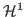

Next: About this document ...
Efforts are currently being directed towards a fully implicit, electromagnetic, JFNK-based solver, motivating the necessity of developing a fluid-based, electromagnetic, preconditioning strategy [1]. The two-fluid plasma (TFP) model is an ideal approximation to the kinetic Jacobian. The TFP model couples both an ion and an electron fluid with Maxwell's equations. The fluid equations consist of the conservation of momentum and number density. A Darwin approximation of Maxwell is used to eliminate light waves from the model in order to facilitate coupling to non-relativistic particle models. We analyze the TFP-Darwin system in the context of a stand-alone solver with consideration of preconditioning a kinetic-JFNK approach.
The TFP-Darwin system is addressed numerically by use of nested iteration
(NI) and a First-Order Systems Least Squares (FOSLS) discretization. An
important goal of NI is to produce an approximation that is within the
basin of attraction for Newton's method on a relatively coarse mesh and,
thus, on all subsequent meshes. After scaling and modification, the
TFP-Darwin model yields a nonlinear, first-order system of equations
whose Fréchet derivative is shown to be uniformly

[1] G. Chen, L. Chacón, Computer Physics Communications, 185(10), 2014.